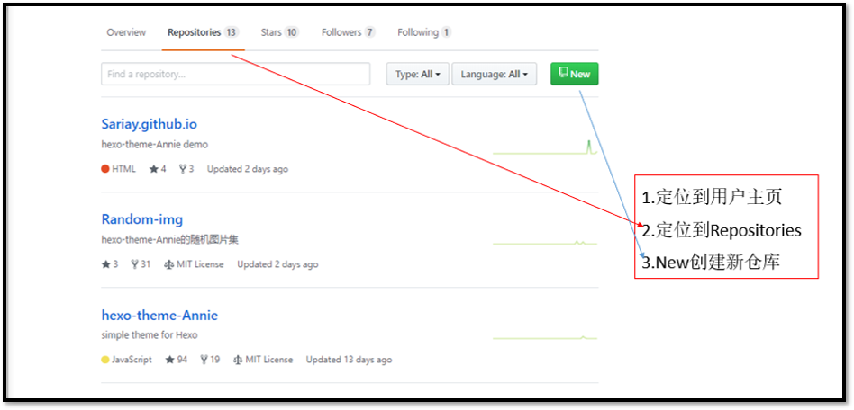
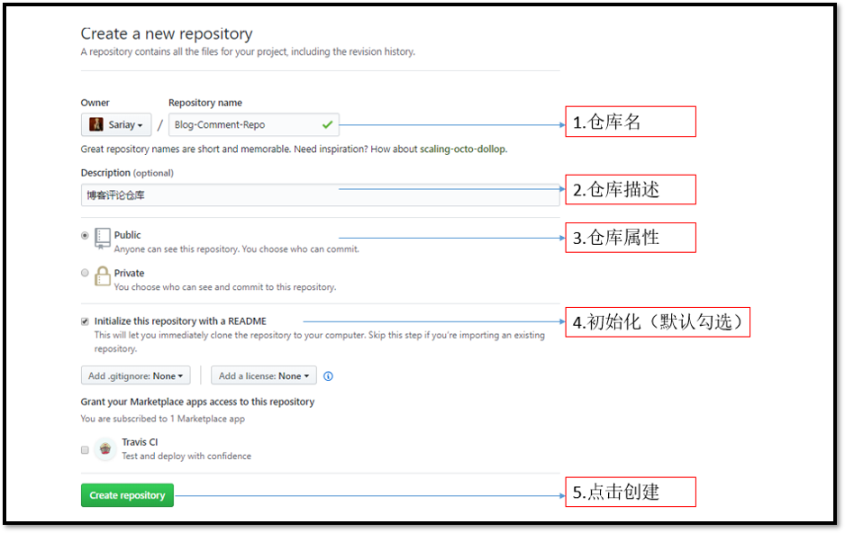
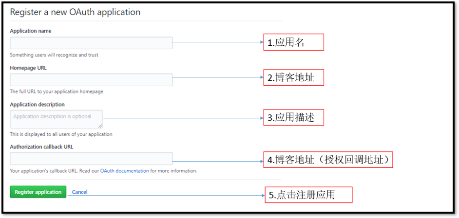
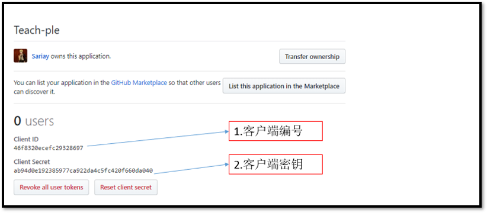

应请求，特意写了这篇文章。文章涉及到了Github仓库的创建、OAuth应用的申请、Gitalk评论插件的使用，请读者按需取用。（文章不叙述具体概念及原理）
Gitalk使用方法一
新建仓库
- 点击你的用户名，定位到github用户主页，新建一个仓库

- 点击New之后，你应该看到

注册应用
Gitalk评论插件的授权机制依赖于OAuth Application，故使用Gitalk之前注册新应用。注册链接
- 点击注册链接之后，你应该看到

| 参数 | 说明 | 填写例子 |
|---|---|---|
| Application name | 应用名称 | Annie-Gitalk |
| Homepage URL | 博客地址 | https://sariay.github.io/或者https://…name.com/ |
| Application description | 应用描述 | Annie-Gitalk |
| Authorization callback URL | 博客地址 | https://sariay.github.io/ 或者https://…name.com/ |
- 点击Register application之后，你应该看到

请复制、保留Client ID和Client Secret的值（相应字段下方的字符串。此处Teach-ple应用我已删除）
主题配置
现在，请打开主题目录下的_config.yml文件，配置Gitalk评论插件的参数
1 | gitalk: |
| 参数 | 说明 | 填写例子 |
|---|---|---|
| enable | 插件开关，true启用插件，false关闭插件 |
true |
| clientID | 注册OAuth应用之后获得的值 | ‘ce11……’ |
| clientSecret | 注册OAuth应用之后获得的值 | ‘ce11……’ |
| repo | 前面创建的仓库的名称（issues的容器） | Annie-Gitalk |
| owner | 前面创建的仓库的拥有者 | Sariay |
| admin | 前面创建的仓库的管理者 | Sariay |
| distractionFreeMode | Gitalk插件的参数（无干扰模式，true启用，false关闭） |
true |
| hrefTrimend | Post url处理（删除url中的#、index等字符，缩短url） |
默认字段 |
本地测试
1 | hexo g |
hexo s本地测试以检查参数是否设置错误，hexo d部署以正常使用。（第一次使用，请登陆初始化）
Gitalk使用方法二
与方法一的区别：不新建仓库，使用你的博客仓库作为issues容器。（跳过新建仓库的步骤即可）
| 参数 | 说明 | 填写例子 |
|---|---|---|
| enable | 插件开关，true启用插件，false关闭插件 |
true |
| clientID | 注册OAuth应用之后获得的值 | ‘ce11……’ |
| clientSecret | 注册OAuth应用之后获得的值 | ‘ce11……’ |
| repo | 你的博客仓库的名称（issues的容器） | Annie-Gitalk |
| owner | 你的博客仓库的拥有者 | Sariay |
| admin | 你的博客仓库的管理者 | Sariay |
| distractionFreeMode | Gitalk插件的参数（无干扰模式，true启用，false关闭） |
true |
| hrefTrimend | Post url处理（删除url中的#、index等字符，缩短url） |
默认字段 |
相关问题的答案
| 错误状态 | 可能的原因 |
|---|---|
| 文章页不见评论插件的信息 | 未启用插件（ |
| Error not found | repo、owner、admin出错 |
| —— | —— |
更多问题，请查看Gitalk评论插件的ISSUES